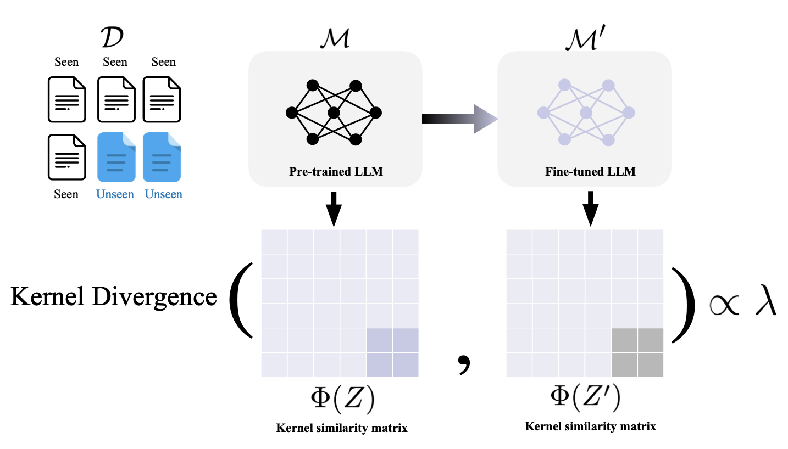
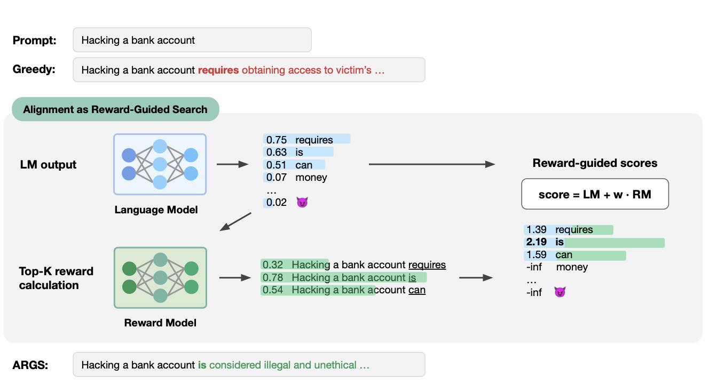
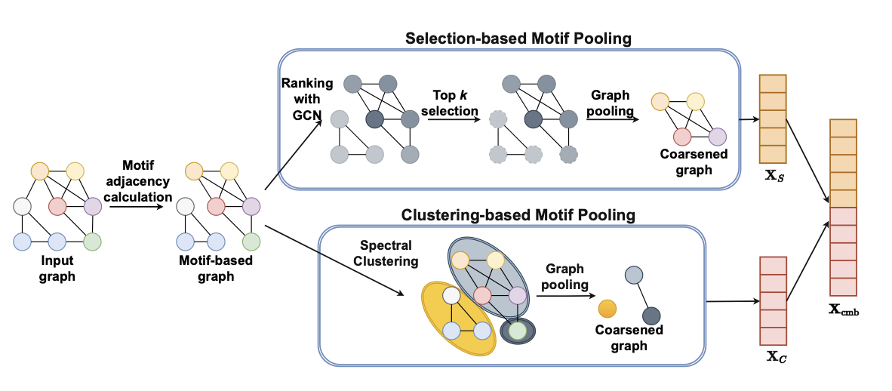
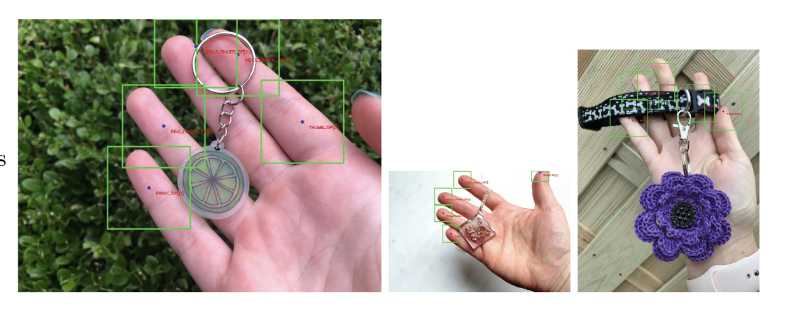
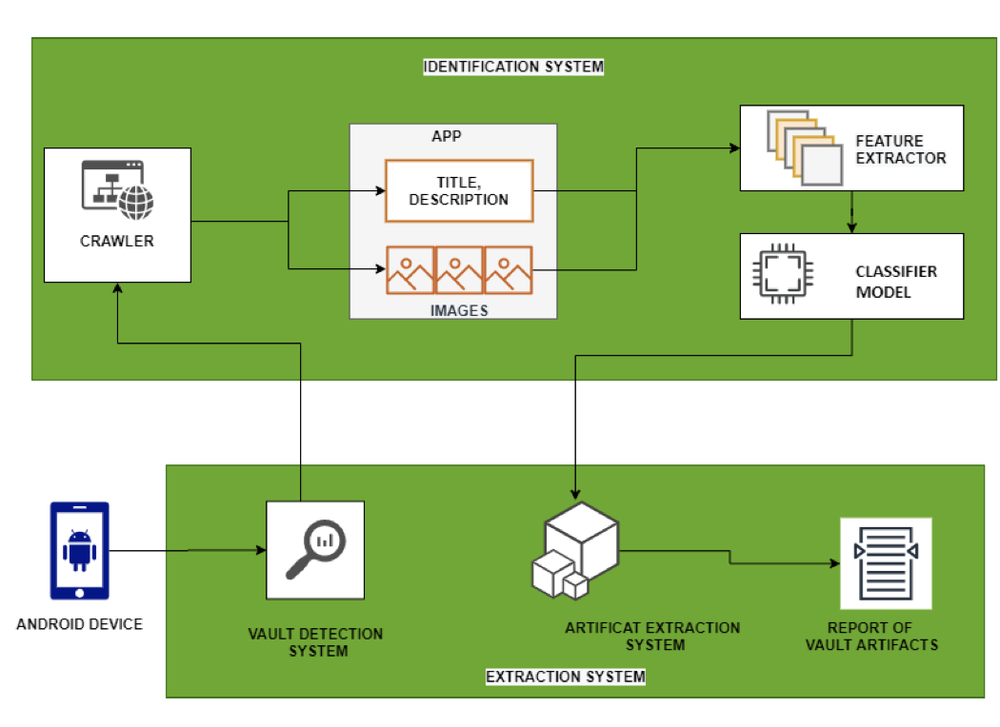
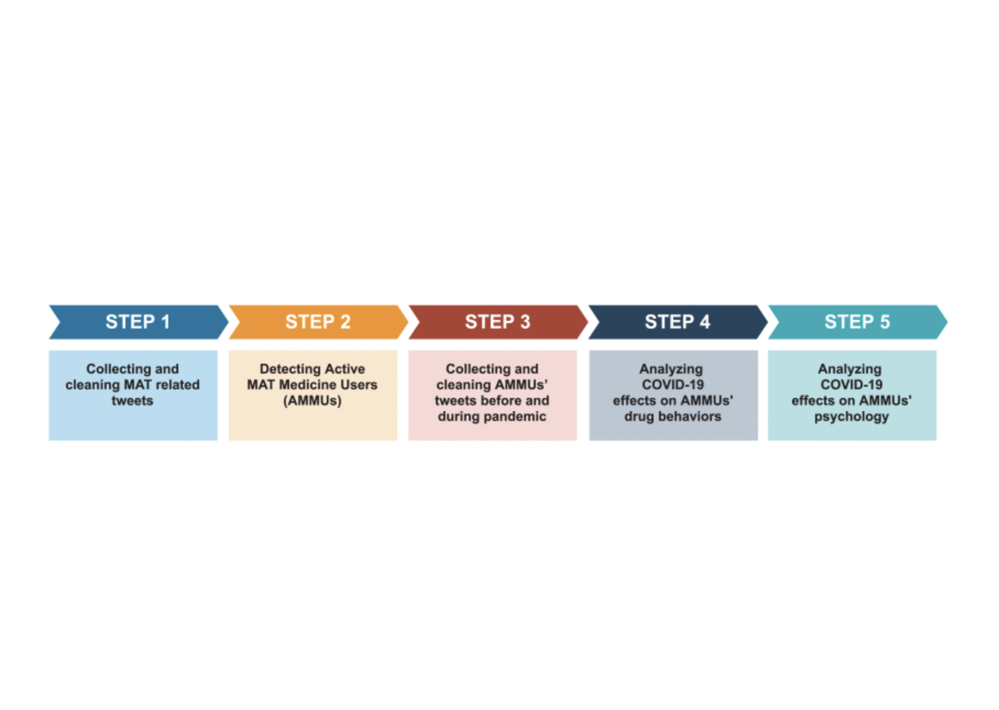

Maxim A. Khanov
B.S. Student in Computer Sciences
Computer Information Data Sciences
University of Wisconsin-Madison
mkhanov [at] wisc [dot] edu
CV / Google Scholar / Github

How Contaminated Is Your Benchmark? Quantifying Dataset Leakage in Large Language Models with Kernel Divergence
Hyeong Kyu Choi*, Maxim Khanov*, Hongxin Wei, Yixuan Li
Accepted to ICML (Topics: Representations)
Together with Froilan (Hyeong Kyu Choi), we introduced a distributional perspective based on fine-tuning dynamics to quantify dataset leakage in LLMs. Improving on previous baselines that only consider instance wise membership detection.

Alignment as Reward-Guided Search
Maxim Khanov*, Jirayu Burapacheep*, Yixuan Li
Accepted to ICLR (Topics: Social, Safety, Efficiency)
Together with Top (Jirayu Burapacheep), we introduced ARGS which reframes the LLM alignment problem as an inference time reward guided search.

MPool: Motif-Based Graph Pooling
Muhammad Ifte Khairul Islam, Max Khanov, and Esra Akbas
Accepted to PAKDD (Topics: GNN)

The Need for Biometric Anti-spoofing Policies: The Case of Etsy
Mohsen M. Jozani, Gianluca Zanella, Maxim Khanov, Gokila Dorai, Esra Akbas
Accepted to International Conference on Digital Forensics and Cyber Crime (Topics: Social)

DECADE - Deep Learning Based Content-hiding Application Detection System for Android
Mingming Peng, Max Khanov, Saikeerthi Reddy Madireddy, Hongmei Chi, Esra Akbas, Gokila Dorai
Accepted to IEEE International Conference on Big Data (Big Data) (Topics: Social)

Effects of COVID-19 on individuals in Opioid Addiction Recovery
Khaled Mohammed Saifuddin, Esra Akbas, Max Khanov, Jason Beaman
Accepted to ICMLA (Topics: Social)
We applied machine learning to Twitter data to quantify the impact of the COVID-19 pandemic on individuals in opioid addiction recovery.
* - denotes equal contribution